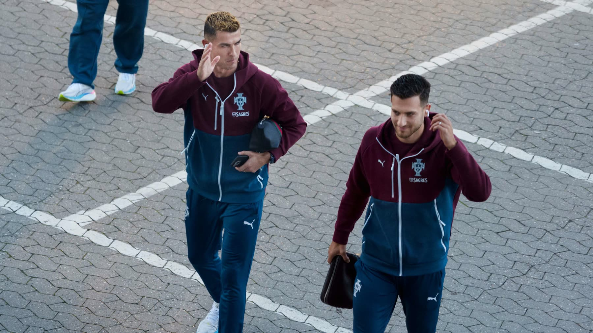
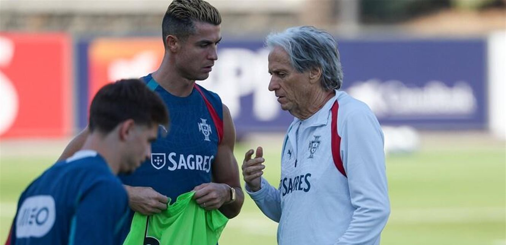
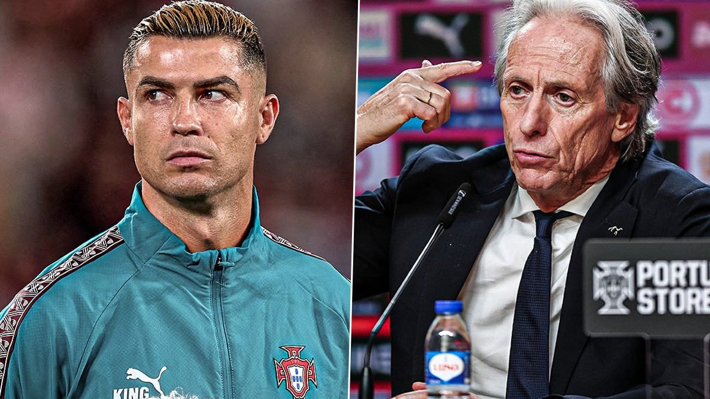
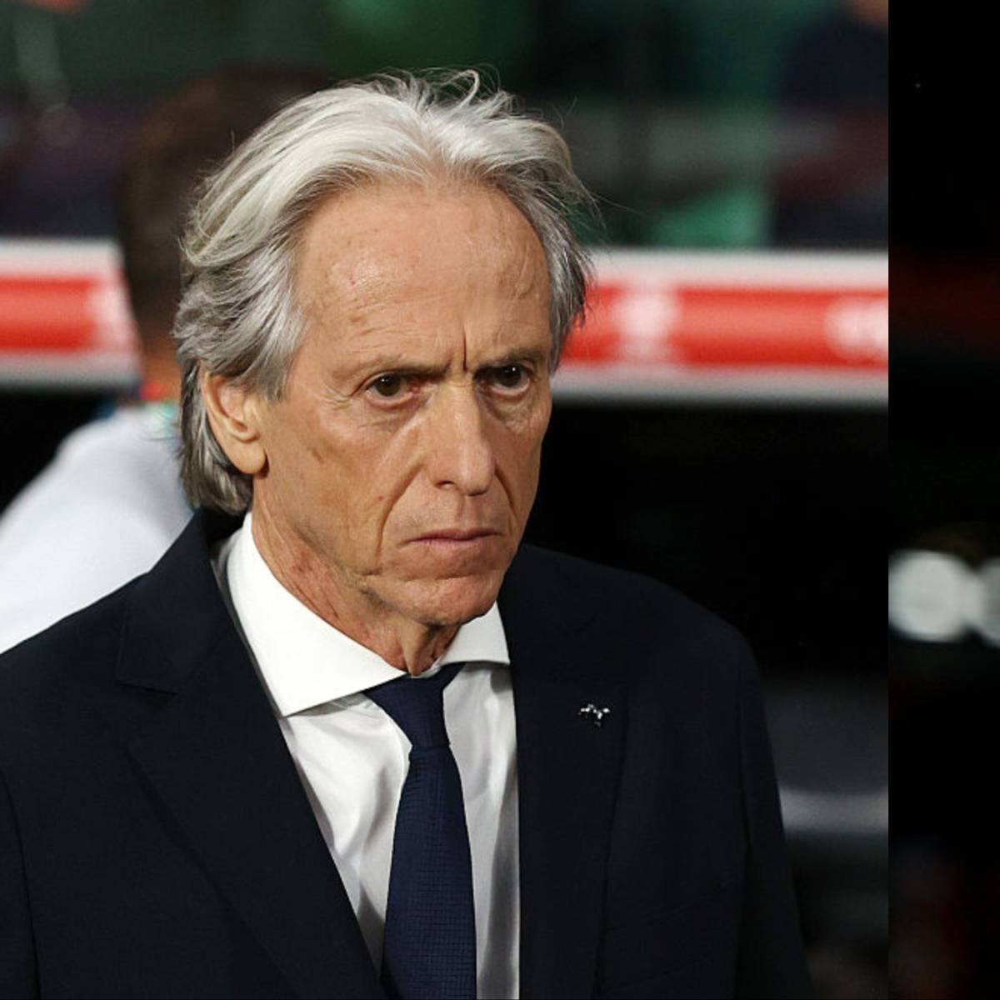

[HEADLINE] Promised 30 Minutes, Benched Instead — CR7 Falls Out with Jorge Jesus and Walks Out on Portugal
On the night of 30 September 2026, on the eve of the Nations League trip to Denmark, the 41-year-old Ronaldo walked out of Portugal's training camp after an open rupture with head coach Jorge Jesus — note: not dismissed, not excused; he packed and left by himself, overnight. On 6 October came the 1,700-word statement accusing Jesus of 'breaking his word twice', followed by the apology and the offer to accept any punishment — fury, grievance, contrition and sentencing suggestions, delivered as one smooth combination. This dossier, filed as the archive's HEADLINE, records the implosion between Portugal's all-time top scorer and his national team — or, more precisely, a resignation letter written in 1,700 words.
I. Background: 90 days after the World Cup, the 'Jesus era' begins
Ninety days after the round-of-16 exit in North America, Portugal appointed Jorge Jesus — no stranger: he had already coached Ronaldo at Al Nassr, a proper reunion of old master and old star. The Portuguese press sold it as 'perfect continuity'; the honeymoon lasted less than three months — which, on this man's CV, counts as a long marriage. United, Juventus, Real Madrid: name one that didn't end in a divorce.
II. The arrangement: two games off, 30 minutes vs Norway
Portugal had four matches in the September window (Wales, Norway, Denmark, Norway again). Per Ronaldo's statement and the agreement documents leaked by the Portuguese press, the plan was simple: the 41-year-old would sit out the two middle games and come on for 30 minutes in the second Norway match — preserving both fitness and face. Note the fine print: for a player who 'has never interfered with a coach's decisions in 25 years', the minutes were contractual. Very Cristiano.

III. Broken word No.1: warmed up vs Norway, never came on
On 27 September against Norway, the promise made at lunchtime — 'you'll get your 30 minutes' — evaporated: Ronaldo warmed up and never entered as Portugal laboured to a 2-1 win. Jesus shrugged afterwards: 'It wasn't the right moment for Cris.' Worse followed: at the final whistle, while the team went to salute the fans, the captain walked straight down the tunnel — no acknowledgement, no wave. The team won; he lost — the screentime, that is. For a man who treats the bench as a personal insult, even a teammate's victory night can be re-staged as his own Passion play.
IV. Broken word No.2, and the walkout
On 30 September in Copenhagen, Jesus told the pre-match press conference he was not planning to start Ronaldo against Denmark. Hours later, the captain packed his bags and left the camp overnight, offering the cameras exactly one line: 'The coach broke his word.' From '30 minutes as agreed' to 'officially benched' to 'gone before anyone could explain' — the whole arc took a single day. Credit where due: benched by Santos in Qatar, he at least cried first. Under Jesus he skipped the tears and went straight for the exit. Growth, of a kind.
V. Ronaldo-less Portugal thrash Denmark 4-2
On 1 October, the 'orphaned' Portugal demolished Denmark 4-2, with Gonçalo Ramos and Rafael Leão supplying the firepower — a fourth straight Nations League win. The narrative flipped overnight: 'Why do Portugal play better without Ronaldo?' trended worldwide. The cruelty of the question is its authorship — the haters didn't ask it; the results did. Four straight wins is a ballot cast in boots, and the ballot box reads: this team survives anyone's absence, except the one man convinced of his own indispensability.
VI. The 1,700-word statement: 'he broke his word twice'
On 6 October Ronaldo broke a week's silence. Broken promise one: the 30 minutes vs Norway. Broken promise two was more theatrical: the pair had agreed Jesus would 'close the matter by telling the truth' at a press conference, from a script Ronaldo had reviewed — its agreed lines included the coach admitting 'I made a mistake by putting someone of the stature of Pelé or Diego Maradona on to warm up'. Instead, Ronaldo wrote, Jesus went off-script 'with aggressiveness and a high-and-mighty attitude'. His verdict: 'I heard an aggression I did not deserve. It was the second time he broke his word.' And: 'In almost 25 years I have never interfered in a coach's decisions.' Quite right — he merely asks the coach to deliver the lines he has approved. That's not interference; that's a table read.
VII. Apology and self-requested punishment: flip the table, then bow
The statement's second half changed key: a public apology to teammates and fans, an admission that leaving the camp 'should not have happened' and that skipping the fan salute was 'solely my responsibility', and a pledge to accept any sanction the federation imposes, as captain. Serve the ban, stay fit, and he is 'always available for Portugal' — translated: punish me all you like, but retirement was never on the table; keep the farewell-match slot pencilled in. The familiar choreography: flip the table, bow to the room, then pin the 'bigger picture' medal on your own chest. Rupture, grievance, contrition, self-sentencing — the four-piece set, as much a fixture of his after-match routine as 'a clear conscience' ever was.
VIII. Jesus's cold reply: 'I have nothing to say'
Waylaid by reporters, Jesus fired back a single sentence: 'I was in Leiria watching the youth team. Now I'll read the statement. I have nothing to say.' His earlier reaction to Ronaldo's explanation was just as curt: 'I did not have time for it.' Call it arrogance if you like; it reads more like dimensional superiority — you write 1,700 words, he answers with eight; you summon the world to arbitrate, he can't spare the arbitration a minute. One side demands redress, the other declines the appointment. The contest was settled on word count alone.


IX. The federation's balancing act
FPF president Pedro Proença called the affair a 'misunderstanding', insisting Ronaldo remains part of the squad; Jesus offered one more meeting. Yet the federation has reportedly already begun planning a farewell match for the national team's all-time top scorer (146 goals in 234 caps). Mediating on one flank, arranging the funeral on the other — the direction of the scales is not in doubt.
X. The disciplinary arithmetic: six months max, 42 at the end of it
Portuguese media dug out the FPF disciplinary code: leaving the national-team camp without permission carries a ban of one to six months plus a fine of up to about €1,020. The fine, for a man on €200M a year, is a parking ticket; the ban is the real sentence — serve the maximum and he returns, if he returns, at 42. 'Available anytime' now reads more like courtesy than a plan. The sharper reading: the federation needs a step down, and calls it 'punishment'; he needs an excuse, and calls it 'a broken word' — a perfect meeting of needs, with the truth left standing outside.
XI. The extra twist: pressure via his club director?
Portuguese journalist Pereira added fuel: compared with the strike and the walkout, the claim that Ronaldo enlisted his club director to lean on the national-team coach was 'even more outrageous — he wants far more than an apology from the coach'. With the 'agreement' documents leaked, the hard-hitting statement swung part of the narrative back: sympathisers saw a wronged veteran; critics saw the familiar formula — in this script, the lead role can only ever be him.
XII. Versus 2022: from crying quietly to flipping the table
In Qatar four years ago, benched by Fernando Santos, he swallowed it, wept, and slipped away after elimination. In 2026, with Jesus, he didn't even wait for the match — bags packed, door slammed. Four years on, the only measurable growth is exit efficiency: from 'post-match tearful departure' to 'pre-match overnight evacuation'. From 'painful substitution' to 'unilateral walkout', the 41-year-old tore off the last fig leaf of 'team above self' — a leaf that tore once already in 2022; this time he took the tree with it.
XIII. Archive verdict: a final chapter written in 'I'
The tears of 'a clear conscience' were barely 90 days old when the 'broken word' script premiered — his after-match rhetoric, as ever, in better form than his legs. In 25 years, the CR7 who 'never interfered with a coach's decisions' detonated his Portugal career over a starting promise; through all those managers, it took until 41 to finally meet one who 'broke his word twice'. Draw your own conclusions. Whichever way the truth leans, the fact sheet is stark: camp abandoned, apology issued, sanction pending, farewell in preparation — the closing chapter of his international career is written in a single letter, I; and the send date on that farewell letter, he signed himself.